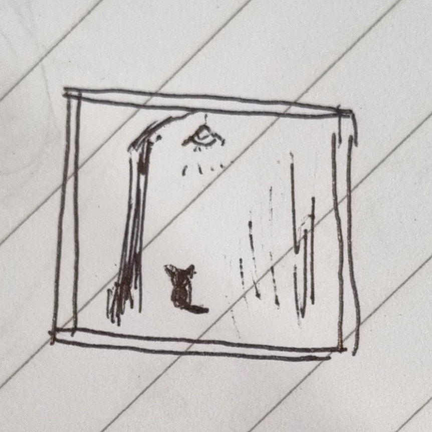

Welcome!
My name is Hyebin Seo. I am currently pursuing a Master's in English Education at Seoul National University.
My personal learning, teaching, and academic writing have led to my research interests in second language acqusition and language processing. In my free time, I study and work on natural language processing projects in Python.
My current research interests are:
- Corpus linguistics and natural language processing (NLP)
- Discourse, register, English for academic Purposes (EAP)
- Second language acquisition from the usage-based approach